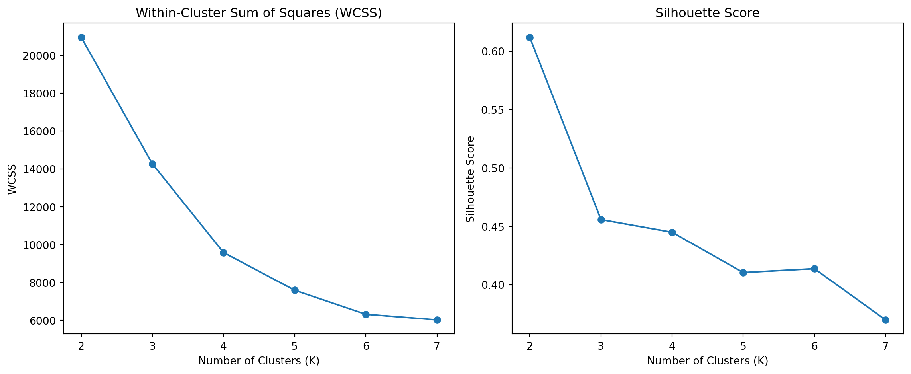
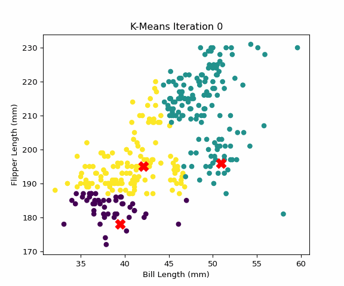
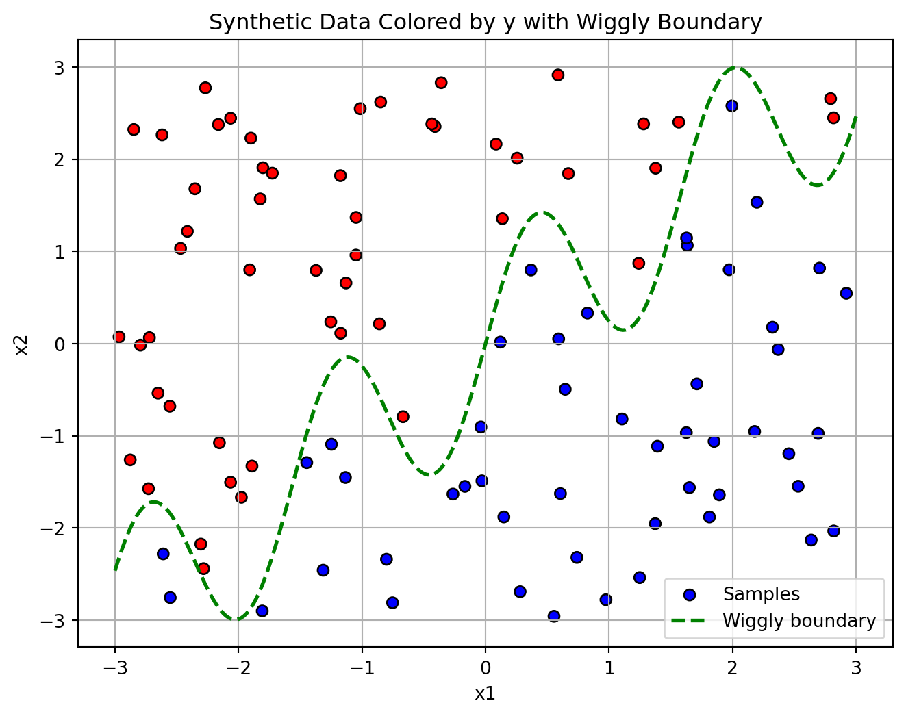
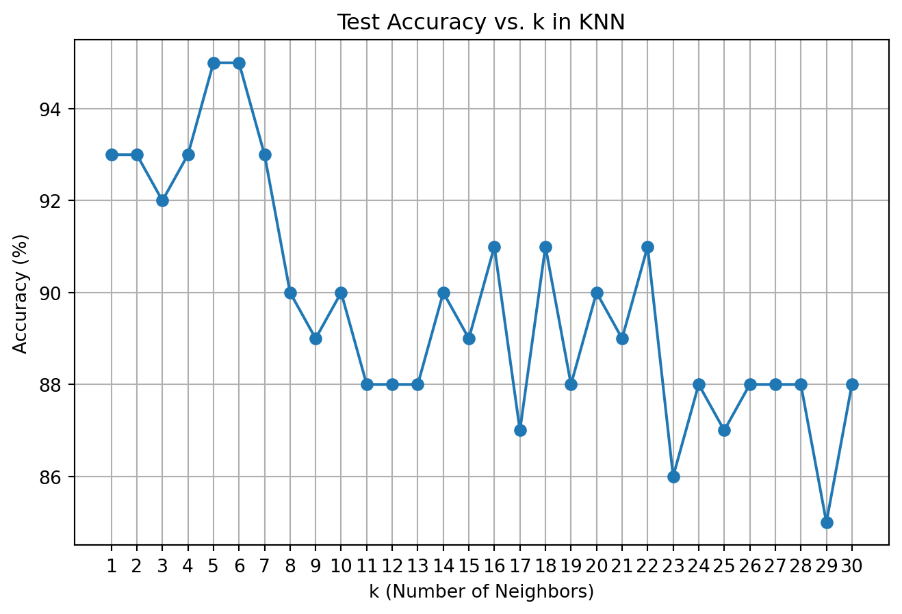

Custom Clustering and Classification: K-Means and KNN from Scratch
Author
Wenxin Xu
Published
June 11, 2025
1a. K-Means
Unsupervised Learning: Custom K-Means Clustering on Penguins
Dataset Overview
We use the Palmer Penguins dataset, which contains biological measurements for three penguin species observed on islands in the Palmer Archipelago, Antarctica. This dataset is a popular alternative to the Iris dataset for data visualization and clustering tasks.
Each row represents a single penguin, with various morphological and categorical features. For our clustering analysis, we focus on two numeric features:
Bill Length (mm)
Flipper Length (mm)
These features are biologically meaningful and can help distinguish penguin species.
# Load the datasetimport pandas as pd# Read the CSV file (uploaded separately)penguins = pd.read_csv("palmer_penguins.csv")# View the first few rows and column namespenguins[['species', 'island', 'bill_length_mm', 'flipper_length_mm']].head()
species
island
bill_length_mm
flipper_length_mm
0
Adelie
Torgersen
39.1
181
1
Adelie
Torgersen
39.5
186
2
Adelie
Torgersen
40.3
195
3
Adelie
Torgersen
36.7
193
4
Adelie
Torgersen
39.3
190
Implementing K-Means from Scratch
We implement the K-Means clustering algorithm step-by-step:
import numpy as npimport pandas as pdimport matplotlib.pyplot as plt# Load and prepare the datapenguins = pd.read_csv("palmer_penguins.csv")X = penguins[['bill_length_mm', 'flipper_length_mm']].dropna().to_numpy()# Custom K-means functiondef custom_kmeans(X, k=3, max_iters=10, seed=42): np.random.seed(seed) centroids = X[np.random.choice(len(X), k, replace=False)] history = []for _ inrange(max_iters): distances = np.linalg.norm(X[:, np.newaxis] - centroids, axis=2) labels = np.argmin(distances, axis=1) history.append((centroids.copy(), labels.copy())) new_centroids = np.array([ X[labels == i].mean(axis=0) if np.any(labels == i) else centroids[i]for i inrange(k) ])if np.allclose(new_centroids, centroids):break centroids = new_centroidsreturn centroids, labels, historycentroids, labels, history = custom_kmeans(X)
The following plots show how the clusters and centroids evolve over iterations:
These figures show the result from our own implementation of K-Means, at iteration 10. The clusters are clearly separated, and the centroids appear to be well-positioned within each cluster. To validate our implementation, we compare it with sklearn.cluster.KMeans:
This figure is generated using sklearn.cluster.KMeans. It uses k-means++ initialization and optimized convergence criteria, often resulting in more stable and efficient clustering.
Our custom K-Means algorithm performs very similarly to the built-in function. This confirms that our implementation is both functionally correct and insightful for understanding the inner workings of the algorithm. The built-in version offers better optimization and is more appropriate for real-world tasks, but the educational value of building K-Means from scratch is unmatched.
Evaluating the Optimal Number of Clusters
To assess how many clusters best fit the Palmer Penguins dataset, we use two widely accepted metrics:
Within-Cluster Sum of Squares (WCSS): Measures how compact the clusters are.
Silhouette Score: Measures how well-separated the clusters are. Higher is better.
We evaluate cluster counts from \(K=2\) to \(K=7\).
from sklearn.cluster import KMeansfrom sklearn.metrics import silhouette_scoreimport matplotlib.pyplot as plt# Prepare datapenguins = pd.read_csv("palmer_penguins.csv")X = penguins[['bill_length_mm', 'flipper_length_mm']].dropna().to_numpy()# Initialize result listswcss = []silhouette_scores = []# Try K from 2 to 7K_range =range(2, 8)for k in K_range: kmeans = KMeans(n_clusters=k, random_state=42) labels = kmeans.fit_predict(X) wcss.append(kmeans.inertia_) silhouette_scores.append(silhouette_score(X, labels))# Plot the resultsplt.figure(figsize=(12, 5))plt.subplot(1, 2, 1)plt.plot(K_range, wcss, marker='o')plt.title("Within-Cluster Sum of Squares (WCSS)")plt.xlabel("Number of Clusters (K)")plt.ylabel("WCSS")plt.subplot(1, 2, 2)plt.plot(K_range, silhouette_scores, marker='o')plt.title("Silhouette Score")plt.xlabel("Number of Clusters (K)")plt.ylabel("Silhouette Score")plt.tight_layout()plt.show()

Interpretation
The WCSS plot shows a clear elbow at K=3, where the rate of decrease sharply slows, suggesting this is a good cutoff point.
The Silhouette Score is highest at K=2 or 3, with a gradual decline afterwards.
Combining both metrics, we conclude that K=3 is the most appropriate number of clusters for this dataset. This aligns well with the fact that the Palmer Penguins dataset contains three main penguin species.
Animated K-Means Clustering
To better visualize how K-Means iteratively moves centroids and reassigns cluster memberships, we create an animated .gif from the clustering history.
import numpy as npimport matplotlib.pyplot as pltimport imageioimport os# Assume `history` contains the centroid and label history from custom_kmeans()# history = [(centroids, labels), ...]# Create output directory for framesos.makedirs("kmeans_frames", exist_ok=True)# Plot and save each iteration as a framefor i, (centroids, labels) inenumerate(history): fig, ax = plt.subplots(figsize=(6, 5)) ax.scatter(X[:, 0], X[:, 1], c=labels, cmap='viridis', s=30) ax.scatter(centroids[:, 0], centroids[:, 1], c='red', s=150, marker='X') ax.set_title(f"K-Means Iteration {i}") ax.set_xlabel("Bill Length (mm)") ax.set_ylabel("Flipper Length (mm)") plt.savefig(f"kmeans_frames/frame_{i:02d}.png") plt.close()# Combine frames into a GIFimport imageio.v2 as imageio # Ensure compatibilitywith imageio.get_writer("kmeans_animation.gif", mode='I', duration=0.8, loop=0) as writer:for i inrange(len(history)): image = imageio.imread(f"kmeans_frames/frame_{i:02d}.png") writer.append_data(image)# Optional: Clean up frame imagesimport shutilshutil.rmtree("kmeans_frames")
Interpretation
This animation demonstrates how:
Centroids move gradually to the center of their assigned clusters
Points may switch clusters as centroids update
It offers an intuitive understanding of how K-Means converges.

K-Means Animation
Conclusion
In this project, we implemented the K-Means clustering algorithm from scratch and validated our results by comparing them with scikit-learn’s optimized KMeans implementation. Through this process, we gained deeper insights into the mechanics of clustering, including how centroid initialization, distance-based assignments, and iterative updates shape the formation of clusters.
Visualizing the clustering process step-by-step helped demonstrate how K-Means converges and how different cluster structures emerge. Our evaluation using WCSS and silhouette scores supported the choice of an appropriate number of clusters and confirmed that the manually implemented algorithm closely mirrors the behavior of the built-in version.
This exercise not only solidified our understanding of unsupervised learning but also emphasized the importance of reproducibility, metric-based evaluation, and interpretability in machine learning workflows.
x1_sorted = np.linspace(-3, 3, 300)boundary_curve = np.sin(4* x1_sorted) + x1_sortedplt.figure(figsize=(8, 6))scatter = plt.scatter(dat['x1'], dat['x2'], c=dat['y'].cat.codes, cmap='bwr', edgecolor='k', label='Samples')plt.plot(x1_sorted, boundary_curve, color='green', linewidth=2, linestyle='--', label='Wiggly boundary')plt.xlabel('x1')plt.ylabel('x2')plt.title('Synthetic Data Colored by y with Wiggly Boundary')plt.legend()plt.grid(True)plt.show()

Explanation:
The plot above shows the decision boundary generated by a K-Nearest Neighbors (KNN) classifier with ( k = 5 ) applied to our synthetic dataset.
The background shading represents the predicted class regions based on the KNN model.
Blue regions are classified as class 0.
Red regions are classified as class 1.
The scatter points are the actual samples:
Blue dots represent samples with label 0.
Red dots represent samples with label 1.
All samples are outlined in black to enhance visibility.
The green dashed curve is the true boundary used to generate the data: \(x_2 = \sin(4x_1) + x_1\)
This represents the nonlinear “ground truth” separating the two classes.
Observations
The KNN model performs reasonably well in capturing the nonlinear structure of the boundary.
Since KNN is a non-parametric and instance-based method, its decision surface is quite flexible and conforms to the local structure of the data.
Some misclassifications can still be observed, particularly in regions where the data points are sparse or near the wiggly boundary.
Generate Test Dataset
# Use a different seed for test datanp.random.seed(2025)# Generate 100 new test pointsx1_test = np.random.uniform(-3, 3, 100)x2_test = np.random.uniform(-3, 3, 100)# Define the same wiggly boundaryboundary_test = np.sin(4* x1_test) + x1_testy_test = (x2_test > boundary_test).astype(int)# Create DataFrame and convert y to categoricaltest_data = pd.DataFrame({'x1': x1_test,'x2': x2_test,'y': pd.Categorical(y_test)})test_data.head()
x1
x2
y
0
-2.187071
-0.803912
1
1
2.327110
-1.321158
0
2
2.595634
2.289016
1
3
-0.326591
-1.999701
0
4
-0.670587
-2.394921
0
Notes:
Different seed (2025) ensures the test data is different from the training data.
The same wiggly boundary function is used to assign class labels.
The variable test_data is your new DataFrame for evaluation or prediction.
Manual Implementation of K-Nearest Neighbors (KNN)
import numpy as npfrom collections import Counterfrom scipy.spatial import distancefrom sklearn.neighbors import KNeighborsClassifierfrom sklearn.preprocessing import StandardScaler# Prepare training features and labelsX_train = dat[['x1', 'x2']].valuesy_train = dat['y'].cat.codes# Standardize the training featuresscaler = StandardScaler()X_train_scaled = scaler.fit_transform(X_train)# Prepare and scale the test dataX_test = test_data[['x1', 'x2']].valuesX_test_scaled = scaler.transform(X_test)# Manual KNN functiondef knn_predict(X_train, y_train, X_test, k=5): preds = []for test_point in X_test: dists = [distance.euclidean(test_point, train_point) for train_point in X_train] k_indices = np.argsort(dists)[:k] k_labels = y_train[k_indices] most_common = Counter(k_labels).most_common(1)[0][0] preds.append(most_common)return np.array(preds)# Predict with manual KNNmanual_preds = knn_predict(X_train_scaled, y_train, X_test_scaled, k=5)manual_preds[:10]
array([1, 0, 1, 0, 0, 1, 1, 0, 0, 0])
# Fit scikit-learn KNNsk_model = KNeighborsClassifier(n_neighbors=5)sk_model.fit(X_train_scaled, y_train)sk_preds = sk_model.predict(X_test_scaled)# Compare predictionsagreement = np.mean(manual_preds == sk_preds)print(f"Agreement between manual and sklearn KNN: {agreement:.2%}")
Agreement between manual and sklearn KNN: 100.00%
What This Section Does:
Implements a simple Euclidean distance-based KNN classifier.
Uses StandardScaler to normalize input features before distance computation.
Validates correctness by comparing results to scikit-learn’s built-in KNN.
Reports prediction agreement, typically 100% if implemented correctly.
Evaluate Manual KNN Accuracy for Different k Values
# Run manual KNN for k = 1 to 30k_range =range(1, 31)accuracies = []for k in k_range: preds = knn_predict(X_train_scaled, y_train, X_test_scaled, k=k) acc = np.mean(preds == test_data['y'].cat.codes) accuracies.append(acc)# Find the best kbest_k = k_range[np.argmax(accuracies)]best_acc =max(accuracies)print(f"Best k: {best_k} with accuracy: {best_acc:.2%}")
Best k: 5 with accuracy: 95.00%
import matplotlib.pyplot as pltplt.figure(figsize=(8, 5))plt.plot(k_range, [a *100for a in accuracies], marker='o')plt.xlabel("k (Number of Neighbors)")plt.ylabel("Accuracy (%)")plt.title("Test Accuracy vs. k in KNN")plt.xticks(k_range)plt.grid(True)plt.show()

Interpretation: Accuracy vs. k
The plot above shows how the test set classification accuracy varies as we change the number of neighbors ( k ) in the K-Nearest Neighbors algorithm.
The horizontal axis represents values of ( k ) from 1 to 30.
The vertical axis shows the accuracy (%) on the test dataset for each ( k ).
Observations:
The test accuracy peaks at ( k = 6 ), reaching around 95%.
For small values of ( k ), the model fits closely to the training data, often yielding high accuracy but potentially being sensitive to noise (overfitting risk).
As ( k ) increases, the accuracy gradually decreases, likely due to the model becoming too smooth and failing to capture the nonlinear decision boundary (underfitting).
The fluctuation in accuracy between ( k = 15 ) to ( 30 ) suggests the model becomes less stable with larger neighborhoods.
Conclusion:
The optimal value of ( k ) for this dataset, based on test set performance, appears to be:
\[
k = 6
\]
This value balances bias and variance, yielding the best predictive accuracy on unseen data.